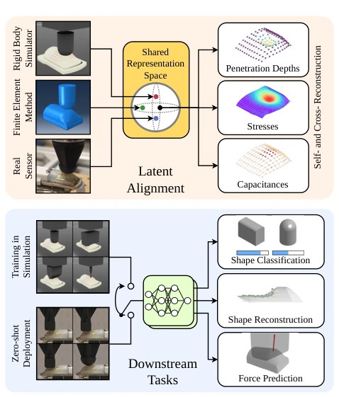
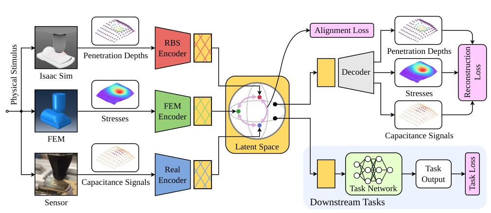
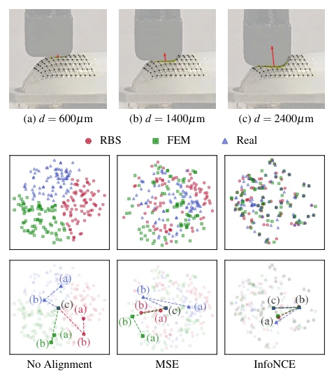
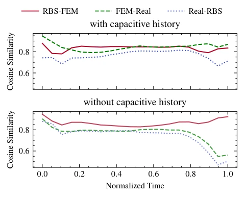

Sim-to-real transfer in tactile simulation has long been a 'black hole' in robot learning due to the complexity of physical deformation and signal conversion; existing simulators are either too slow or too unrealistic. TactSpace avoids forcing signal alignment by establishing a shared latent space that merges simulation (rigid body/finite element) and real capacitive signals. This strategy is ingenious, eliminating the hassle of parameter tuning and calibration, though its reliance on paired data renders it somewhat 'fragile' and potentially ineffective in dynamic scenarios. Nevertheless, the results are indeed robust: force prediction error reduced by 16.7%, and shape reconstruction error reduced by 45.8%, effectively providing a nutritional boost to tactile RL and enabling large-scale data generation. It demonstrates that if physical stimuli are aligned, signal discrepancies can be neglected, which is a boon for domains lacking real-world data.
Tactile data collection is slow and costly, making simulation a necessity. However, existing simulators are either too slow (FEA) or too unrealistic (RBS lacks deformation) [12]. Current Sim-to-Real approaches mostly rely on image translation, are strongly sensor-specific, and become invalid when sensors change [13]. Narang et al. [32] performed latent projection, but it was merely a one-way mapping. We require a representation that unifies the physical essence rather than the signals themselves. Rigid body simulators lack the capability to model complex material deformation, resulting in significant discrepancies between geometric proxies and real outputs, preventing direct training of control strategies from transferring [10], [11]. Consequently, methods that directly align signal distributions or depend on specific sensor assumptions are hard to generalize.

Fig. 1: (Top) Multi-modal tactile inputs are aligned into a shared la- tent space, enabling self- and cross-modal reconstruction. (Bottom) A model trained exclusively on simulated embeddings generalizes zero-shot to real sensor data across downstream tasks including shape classification, reconstruction, and force prediction.
方法Method
方法核心是构建 TactSpace 共享潜空间。首先，通过 ViT 编码器将不同模态（真实电容、刚体穿透深度、有限元应力）映射到同一向量空间。训练目标包含两部分：InfoNCE 对比损失，强制同一物理刺激的不同模态嵌入聚类，消除传感器特异性；交叉重构损失，要求任意模态的嵌入能还原其他模态，防止信息坍缩。解码器采用共享骨干加模态特定头的设计。此外，团队开发了基于 Warp 的 Isaac Lab 插件，利用 GPU 并行化生成海量接触几何数据，解决了触觉数据稀缺问题，使得在仿真中预训练成为可能。
The core of the method is constructing the TactSpace shared latent space. First, a ViT encoder maps different modalities (real capacitive, rigid body penetration depth, finite element stress) into the same vector space. The training objective comprises two parts: InfoNCE contrastive loss, which forces embeddings of different modalities under the same physical stimulus to cluster, eliminating sensor specificity; and cross-reconstruction loss, which requires embeddings from any modality to reconstruct others, preventing information collapse. The decoder employs a shared backbone with modality-specific heads. Furthermore, the team developed an Isaac Lab plugin based on Warp, leveraging GPU parallelization to generate massive contact geometry data, addressing the scarcity of tactile data and enabling pre-training in simulation.

Fig. 2: Overview of the proposed multi-modal latent alignment framework. Each modality is processed by a dedicated ViT encoder that maps observations into a shared latent space. A contrastive alignment loss encourages embeddings of the same stimulus to cluster together. A shared decoder reconstructs all modalities from any latent embedding, supervised by a reconstruction loss. The resulting representations are then used for downstream tasks, where a lightweight task network is trained on simulated embeddings and evaluated zero-shot on real sensor measurements.
The experiment utilized 840 probe trajectories, divided into In-dist and OOD tests. Tasks included shape classification, reconstruction, and force prediction. Baselines included no alignment, MSE alignment, and real data training. InfoNCE yielded the best results. Multi-physics modalities (RBS+FEA) outperformed single modality. Increasing simulation data volume proved effective for geometric tasks, but force prediction still relied on FEA stress. In zero-shot settings, downstream networks trained solely on simulation data performed close to the real data baseline on real sensors. OOD tests revealed that introducing the FEA stress modality significantly reduced shape reconstruction error, while increasing RBS data volume primarily improved geometric task performance. Ablation studies demonstrated that removing the reconstruction loss led to performance degradation, indicating that cross-reconstruction is critical for retaining physical information.
其他图片Other Figures

Fig. 5: Shape reconstruction and force prediction. Indenter shape reconstruction and force prediction working in tandem. The probing depth d is defined as the downwards displacement of the indenter from the point of first contact. T-SNE visualization of latent embeddings. Embeddings generated from different modalities with no alignment loss, mean-squared error (MSE) alignment loss, and InfoNCE alignment loss. The highlighted points in the third row correspond to the physical stimuli as shown in the first row.

Fig. 6: Cross-modal cosine similarity. Cross-modal cosine sim- ilarity between latent embeddings over a normalized contact tra- jectory, averaged across all probing experiments. Normalized time t ∈[0,0.5] corresponds to the indenter pressing into the sensor, while t ∈[0.5,1] corresponds to the indenter retracting.